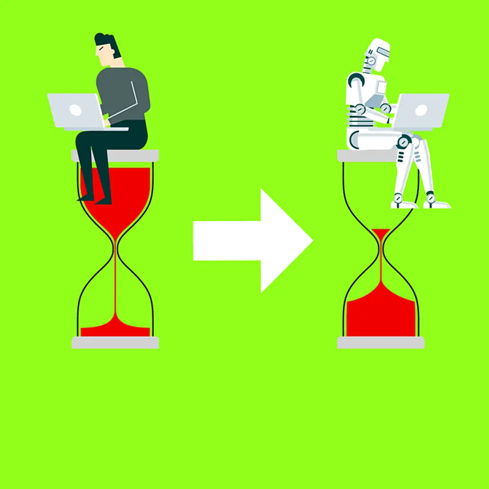

01【新風】29歳「ヤメ星野」起業家が仕掛ける、老舗旅館AI改革
発行日時：2026年10月15日 05:30 JST
あなたに関係ありそうな理由
不動産を保有するだけでなく、予約・設備・現場運営のデータをつないで収益と滞在体験を変える具体例になるためです。
概要
記事は、星野リゾートの投資部門を経て起業した中堀氏が、老舗旅館を運営面から立て直す10pctの取り組みを追う。同社は不動産を買い取るのではなく、地域の旅館・ホテルに入り、運営改善を担う形だ。京都府亀岡市の54室の旅館では、近隣の年配客中心だった想定を、府外から来る家族にも広げた。館内で遊びやイベントを用意し、静かな温泉宿ではなく、滞在そのものを楽しめる場として打ち出した結果、年商は約1億円、前年から25％増になったという。地域の宿を残すことと、客層や使い方を変えることを、同時に進めようとしている。
特徴は、予約を単なる空室販売として扱わない点にある。自社の予約システムで、客室、食事、連泊中の過ごし方、追加サービスを組み合わせられるようにし、選ばれ方や滞在時間を記録する。現場の勘だけでは見えなかった需要を、宿泊者の行動から読み取る考え方だ。記事では、客室の評価は悪くない一方で、浴場の写真を見た段階で予約をやめる人が多いと分かり、浴場改修の投資回収を約2カ月と試算した例が紹介される。海が見える部屋と森を望むデッキのどちらに、客がいくら払うかも、選択データがあれば検討できる。
AIやデータの役割は、華やかな宣伝より日々の運営に近い。価格設定やスタッフの配置を補助し、従来は得意な担当者でも月に8〜10時間かかったシフト作成を、ほぼ自動化できる状態を目指す。値付け、改修、接客のすべてを一律に効率化するのではなく、客の満足を落とさずに時間や資金をどこへ振り向けるかを判断する材料にする。表示コメントでは、既存の紙や古いシステムからデータを移す難しさ、改修効果の前提をどう確かめるかという論点も出た。数字が見えても、現場の運用に落ちるかは別の課題だ。
10pctは運営施設を6件まで増やし、9月には約4億円のシリーズAを調達した。2年で40施設、総売上1,000億円を目指すという。記事の面白さは、AI導入を目的にせず、宿泊者が何を選び、何に不満を感じ、改修がどの収益に結び付くかを確かめる道具として使うところにある。物件やサービスを扱う仕事でも、問い合わせ、予約、利用後の反応を別々に置いたままでは改善の優先順位を誤りやすい。今後は、規模を広げても各地域の宿らしさを保てるか、データで見つけた改善が現場と利用者の双方に受け入れられるかを見たい。
仕事や会話で使える一言
「客室の稼働だけでなく、予約をやめた地点まで見えれば、改修の優先順位が変わりますね。」
NewsPicks原文を読む
02【生産性100倍】AI駆動開発で、IT業界の構造がぶっ壊れる
発行日時：2026年10月15日 05:30 JST

あなたに関係ありそうな理由
AIで実装が速くなるほど、要件を決める速さ、承認の仕組み、外部委託の役割が事業の差になるためです。
概要
記事は、生成AIを前提にソフトウェアを作る「AI駆動開発」が、IT業界の工数配分と商慣行をどう変えるかを描く。Spice Factoryの試算では、従来1人月かかった仕事が0.1人月になり、実装は4人月から0.1人月、テストは2人月から0.1人月へ縮む可能性があるという。実装や試験が速くなる分、全体に占める要件定義・設計の比率は3割程度から8割近くまで上がる。コードを書く速度が上がっても、何を作るか、どの条件で出すかを決められなければ、仕事全体は速くならない。
実務では、人間側の合意形成が新しいボトルネックになり得る。記事には、実装が1日で済んでも承認に3週間かかる例が示される。日本総合研究所は2028年にAIツールの利用を100％、2030年に独自モデルの活用を100％へ広げ、設計・開発・テストで10〜30倍の生産性を見込む。富士通も約50のプロジェクトで取り組み、製造業の顧客では開発工程を約半分、全体を3割減らす目標を置く。法改正対応の概念実証では、3人月だった作業を4時間へ縮めた事例もある。数字だけを比べると100倍だが、適用範囲や前提は個別に見る必要がある。
変わるのは開発手法だけではない。人月を積み上げて請求するモデルでは、作業時間が減るほど受託側の売上が減る矛盾が生じる。記事は、一次請けが短縮した労力を価格競争力や利益に変えられる一方、人月への依存が強い下請け企業は仕事を失う恐れがあると指摘する。富士通は外部委託比率を下げる方向を示し、成果や利用量に応じて対価を決めるモデルへ移ろうとしている。2030年に向けて、従来型SI、モダナイゼーション、Uvanceで価値連動型の比率を段階的に高める考えも紹介される。
表示コメントでは、技術の導入だけで万能になるわけではなく、業務知識、データの正確さ、責任者が決める速さが不可欠だという指摘が目立った。AIに任せる範囲を広げるほど、要件の曖昧さや判断の先送りが表に出る。利用する側は、まず小さな工程で、入力にする資料、レビューする人、誤りがあった時の戻し方を決めるのが現実的だ。発注側も「何人月」ではなく、何をいつまでに変えたいかを言語化する必要がある。今後は、生産性向上が値下げだけに吸収されるのか、品質や新しいサービスへ振り向けられるのか、そして契約が成果をどう測る形に変わるのかを追いたい。
仕事や会話で使える一言
「実装が速くなるほど、何を作るかを決める会議の質と速さが効いてきますね。」
NewsPicks原文を読む
03【ニデック問題】社外取締役がすべき「5つの実践」、そして“最後の切り札”とは
発行日時：2026年10月15日 16:00 JST
あなたに関係ありそうな理由
取締役会や監査の役割を肩書きで終わらせず、問題の兆候を誰がどう上げ、止めるかを考える材料になるためです。
概要
記事は、ニデックで表面化した問題を手がかりに、社外取締役や監査等委員が危機の前後に何をするべきかを整理する。発端の一つは2025年のイタリア子会社における関税支払いをめぐる問題で、中国子会社の不適切会計の疑いも続いた。第三者委員会の調査、東京証券取引所の特別注意銘柄指定を経て、2026年の訂正では売上高が331億円、営業利益が1,664億円、当期純利益が1,607億円、それぞれ減少する影響が示されたという。記事は個別の不正認定を論じるのではなく、なぜ早い段階で組織の問題として扱えなかったのかに焦点を置く。
著者がまず問うのは、社外役員を誰にするかだ。経営を監督し、危機に備え、CEOにも必要なことを言える人を選ぶ必要がある。就任後に挙げる五つの実践は、現場・CEO・子会社と直接対話すること、経営幹部の退任や交代の兆候に敏感でいること、従業員調査や通報、ハラスメントの状況から組織文化を確かめること、古いままのリスク一覧を更新して管理の実効性を見ること、そして監査役や会計・法務・人事から独立して情報が届く経路を持つことだ。書面を読むだけでは、分断された兆候をつなげられないという問題意識がある。
特に重要なのは、内部通報や監査で得た断片を、担当部門の処理で終わらせないことだ。記事は、監査役と直接話す仕組みを置き、必要なら独立した監査、法務、会計、人事の調査へつなぐことを提案する。過去に社内で第三者委員会や取締役会への報告が提案されても退けられたとする報道にも触れ、形式だけ整った三線防衛では早期発見にならないと説く。危機の兆候が出た時は、問題点の指摘だけでなく、何をいつまでに是正するかという具体案を経営へ示す必要がある。
それでも無視されるなら、外部の専門家を入れること、経営トップの交代を求めること、最終的には社外取締役・監査役がそろって辞任することまでが「最後の切り札」になり得ると著者は書く。辞任そのものが目的ではなく、開示と説明を避けられない状態にし、株主や社会に危機を伝える手段という位置付けだ。オーナー色の強い会社ほど、創業者の成功物語を守ることと、組織を守る統制を混同しない必要がある。自社や関係先でも、悪い情報が誰から誰へ上がるか、上がった後に何日で議題化されるかを確認することが出発点になる。今後は、同社の是正策が取締役会、監査、子会社管理の運用をどう変えるかを見たい。
仕事や会話で使える一言
「通報や監査の断片を、事業モデルの問題として誰がつなぐのかを決めておきたいですね。」
NewsPicks原文を読む
04アンソロピック、第3四半期は売上高168億ドルに－IPO控え黒字化
発行日時：2026年10月15日 07:41 JST
あなたに関係ありそうな理由
AI企業の成長を、話題性だけでなく売上の継続性、計算資源のコスト、上場時の説明責任で読む視点になるためです。
概要
記事は、アンソロピックが投資家向け資料で示したとされる第3四半期の業績と、IPO準備の観測を伝える。報道によると、同社の第3四半期売上高は前期比45％増の168億ドルで、調整後の利益とフリーキャッシュフローが黒字になったという。調整後の粗利益率は85％、営業利益率は11％超、既存顧客の売上継続を示すネット・レベニュー・リテンションは900％、計算資源に関するマージンは40％超とされる。いずれも投資家向け説明に基づく数値で、正式な開示書類が出る前の情報として読む必要がある。
IPOについては、11月9日の週に機関投資家向けの本格的な説明を始め、感謝祭前の取引開始を目指す可能性があると報じられた。企業価値は1兆8,000億〜2兆ドル規模を見込む投資家もいるという。生成AIへの期待が非常に大きい一方、上場市場では、売上の伸びだけで評価が決まるわけではない。価格競争が起きた時に顧客がどれだけ残るか、計算資源への投資やリースの負担を吸収できるか、黒字の定義に株式報酬などをどう含めるかが、説明の焦点になる。記事はその緊張関係を、成長企業の資本市場デビューとして映す。
特に注目したいのは、売上の大きさと利益の質を分けて見ることだ。ネット・レベニュー・リテンションが高ければ、既存の顧客が利用を広げている可能性を示すが、少数の大口顧客や割引の扱いでも見え方は変わる。粗利益率が高くても、将来の計算能力の確保にどれほど先行費用が要るかは別に確認したい。表示コメントでも、調整後指標と通常の会計上の利益を同じものとして扱わないこと、株式報酬やインフラ契約の負担を見るべきだという指摘があった。数値は強いが、比較する際の定義を外さないことが大切だ。
競争環境も速い。OpenAI、Metaなどの大手がモデルやサービスを拡大するなかで、企業が何を理由に特定のAIを使い続けるかが問われる。安全性、性能、導入支援、価格、既存の業務システムとのつながりのどこに持続的な強みを作れるかが、上場後の評価につながる。利用者側にとっても、AIサービスを比較する時は、派手なデモだけでなく、料金体系、データの扱い、必要な処理量、障害時の選択肢を確認する契機になる。今後は、S-1などの正式開示で売上の内訳、顧客集中、計算資源の契約、黒字化の根拠がどこまで明らかになるかを追いたい。
仕事や会話で使える一言
「AI企業は売上だけでなく、計算資源の負担と顧客が残る理由を分けて見たいですね。」
NewsPicks原文を読む
05《タイムズカー情報流出》慰謝料は過去事例で数千円 免許証を作り直しても消えない不安…被害者の"終わりなき後始末"
発行日時：2026年10月15日 05:45 JST

あなたに関係ありそうな理由
本人確認書類を集める事業では、事故後の補償だけでなく、そもそも何を何年持つのかを設計する必要があるためです。
概要
記事はタイムズカーの大規模な情報流出と、運転免許証画像をめぐる不安を追う。タイムズカーは9月25日に不正アクセスを検知し、28日に約660万件の会員情報流出を公表した。29日には、うち約160万件で免許証などの画像が含まれる可能性を明らかにしたという。公表時点でクレジットカード情報の流出や不正利用は確認されていないとしたが、氏名、住所、生年月日、顔写真、免許証番号がそろえば、なりすましに使われるおそれを利用者は考えざるを得ない。漏えいが判明した後も、手続きや確認の負担は長く残る。
免許証を再発行しても、古い画像に写る顔や住所、生年月日まで消えるわけではない。画面上の画像だけで本人確認を済ませるサービスでは、番号が変わったことだけでは防ぎ切れない可能性がある。被害に遭った人は、身に覚えのない請求がないかを見る、信用情報の訂正を求める、場合によっては弁護士や裁判の手続きを検討するといった対応を迫られる。記事は、個人が直ちに債務を負うわけではないとしても、問い合わせや説明を重ねる「後始末」が続くことを描く。漏えいは企業の一度の発表で終わる事象ではない。
背景にあるのが、本人確認書類をどこまで、どれほど長く保存するかという問題だ。同社はなりすまし防止や問い合わせ対応のため、退会後も7年間、免許証画像を保有していた。だが、法律上すべての事業者に同じ期間の保存が一律に求められるわけではない。個人情報保護法22条は、利用する必要がなくなった個人データを遅滞なく消去するよう努めることを定める。記事は、何かあった時のために保存する発想と、持ち続けることで被害範囲を広げるリスクを、同じテーブルで判断すべきだと示す。
集団訴訟には10月中旬までに約8万人が参加し、過去のベネッセの事例では一人当たり1,000円または3,300円の賠償が認められたケースがある。今回の補償内容は未定で、免許証の再発行費用も1,500〜2,700円程度とされる。金額だけでは、本人確認情報が残り続ける不安を測りにくい。表示コメントでは、サービスに不要な情報まで会員登録で集めていないか、部門横断で必要性・保管期間・消去を点検すべきだという論点が出た。実務では、収集しない、分けて保管する、期限が来たら確実に消す、事故時に何を案内するかを一続きで決めたい。今後は、同社の調査と補償、保存方針の見直しがどう示されるかを追いたい。
仕事や会話で使える一言
「本人確認情報は、集める理由だけでなく、いつ消せるかまで決めて初めて管理ですね。」
NewsPicks原文を読む